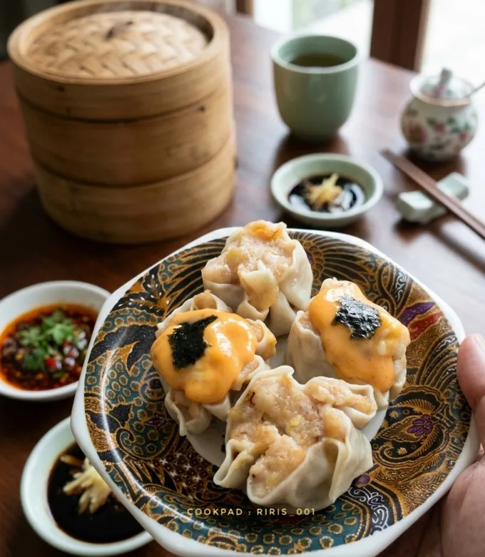

dimsum mentai

hasil inovasi kuliner yang memadukan kelembutan dimsum kukus (biasanya siomay ayam atau udang) dengan siraman saus mentai yang creamy, bercita rasa gurih sedikit pedas, serta sentuhan aroma smoky (asap) setelah dibakar atau di-torch.
Bahan-bahan
- 700 gr Ayam Fillet (dr 1kg ayam)
- 4 siung Bawang putih
- 2 btg Daun Bawang Pre
- 3 sdm Minyak + sedikit Myk Wijen*
- 1 sdm Saori Saus Tiram
- 1 sdm Minyak Wijen
- 1 sdt Garam, Gula (tdk full/secukupnya) 5gr, 10gr
- 1/2 sdt Merica bubuk
- 1 sachet Masako / penyedap rasa
- 1 btr Telur
- 100 gr Tepung Tapioka
- 1 bks Kulit dimsum
- 1 bks Nori & Keju Spreadable
- 1 porsi Saus Mentai
- Tumis bawang putih & daun bawang hingga harum (dng 3 sdm minyak plus sedikit minyak wijen)*
- Potong ayam kecil², cuci bersih lalu tiriskan
- Masukkan semua bahan ke dlm food processor (kecuali tapioka). Giling sebentar asal halus & masih bertekstur
- Masukkan tapioka, giling sebentar lalu pindahkan ke dalam wadah
- Siapkan selembar kulit dimsum, olesi bag dlm dng sedikit air, beri isian secukupnya... Cetak & rapikan atasnya sambil ditekan/dibentuk (aku gak bs whehehee)
- Olesi sarangan dng minyak, kukus dimsum 15-20mnt api sedang saja... Setelah matang, tunggu hangat lalu pisahkan agar tdk lengket
- Tata dimsum di wadah tahan panas, beri topping keju spread / Saus Mentai, lalu torch sebentar & beri nori
- Yummy 😋
home
return